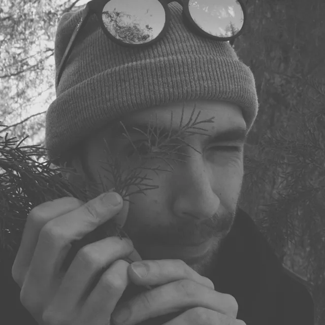
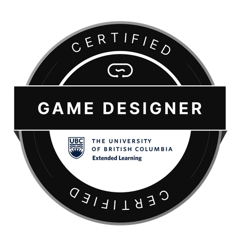

Theo Dwyer
Level Designer · Technical Designer · Unreal Engine 5
Projects
Tetra (working title)
- Procedural Content Generation
- Blueprinting
- Level Design
- Optimization
3D Assets
Serene Statue
A carved wooden bust, photographed on a turntable, rebuilt in RealityScan, cleaned up in Blender, and brought into Unreal Engine 5 with Nanite.
More infoAbout Me
Hey! I'm Theo, a junior game designer and Unreal Engine generalist. I enjoy solving problems and building large, natural-feeling environments. I have 4 years of experience in engine, with my main focuses being Blueprints, level design, environment design, and Procedural Content Generation.
I graduated from Circuit Stream's Online Game Design Bootcamp through the University of British Columbia's extended learning program in May 2025. Since then I've kept working and learning in Unreal Engine 5.
I'm currently designing and developing my own adventure game, Tetra (working title). This is where I spend much of my time working, learning, and playing in Unreal Engine. My professional background is in landscaping, landscape design, and jewelry design. Although these lie outside of game design, they've been major contributors to my creativity, vision, and work ethic as I follow my path into games.
When I'm not in engine, I'm usually out on a trail with my camera. I'm a big hiker and nature photographer, and the forests, rivers, and mountains I spend time in inspire a lot of what I build.

